Pentru al doilea sezon consecutiv, moda a învățat să se reinventeze și să se redescopere. Marcată de fundalul unei pandemii globale, industria fashion a devenit creativă și îndrăzneață în a-și prezenta colecțiile de toamnă-iarnă. Designerii au venit cu noi abordări, ceea ce face tendințele în modă pentru 2021-2022 mult mai realiste. Drept rezultat, ready-to-wear a devenit un concept mult mai funcțional, mult mai atent la lumea într-o continuă schimbare și mult mai ușor de purtat, cu tendințe care funcționează pentru fiecare stil, gen și siluetă.
Mai mult decât atât, sezonul toamnă-iarnă și-a propus să ne facă să visăm, mai cu seamă că tendințele în modă pentru 2021-2022 prezintă piese infuzate cu un optimism festiv, care să ne aducă doza de strălucire până când celebrările se pot desfășura din nou, cum se cuvine. Din acest motiv, am realizat pentru tine o selecție ce poate fi adaptată cu ușurință stilului care te reprezintă. Pregătește-te pentru toamnă alături de epantofi.ro și descoperă tendințele în modă pentru 2021-2022!
Dacă sezoanele precedente au fost încărcate cu idei din moda anilor ‘70-’80-’90, în prezent moda a ajuns în anii ‘2000, în perioada deceniului în care era internetului a dat naștere primelor tendințe în modă, influențate de mediul digital. Din aceste tendințe în modă în 2021-2022 le-am preluat pe cele mai reprezentative, pentru a te pune la curent cu ce este la modă în acest nou sezon. Iată ce haine la modă există în 2021-2022 pentru femei!
Conceptul ski chic este obsesia sezonului, acesta fiind completat de haine matlasate și salopete, jachete și geci puffer confortabile. Toate tendințele în moda de iarnă din 2021-2022 au fost reinterpretate cu un twist urban. În orașul modern, iarna aduce cu sine protecție, confortabilitate și spirit chic.
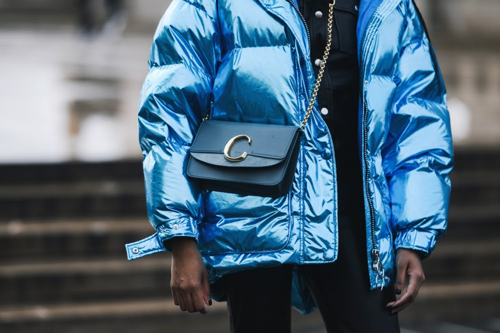
Una dintre cele mai actuale tendințe în modă în 2021 rămâne cea a imitației de blănuri. Conștiente de cauza animalelor și respectând legile cu privire la protecția acestora, brandurile de îmbrăcăminte aduc în contextul fashion blănuri artificiale confortabile, în esență mai realiste decât blana naturală.
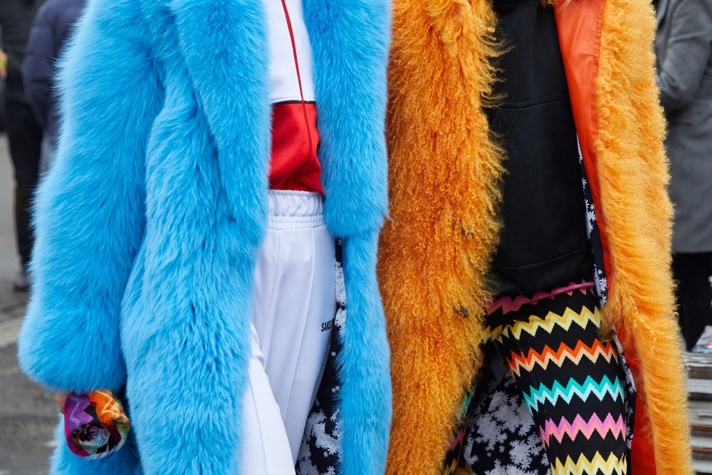
Pliurile se numără și ele printre tendințele în modă pentru femei în 2021. Indiferent că vorbim despre ținutele pentru birou, ținutele business sau casual chic, aspecul femeii este adaptat cu fuste croite plisate.
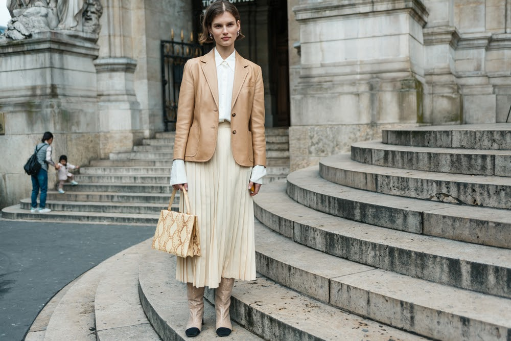
Pietrele strălucitoare, penele și paietele luminează podiumurile de pe catwalk în Săptămâna Modei. Rezultatul? Un stil vestimentar sclipitor, ce ne îndeamnă să visăm la festivitățile ce vor urma.
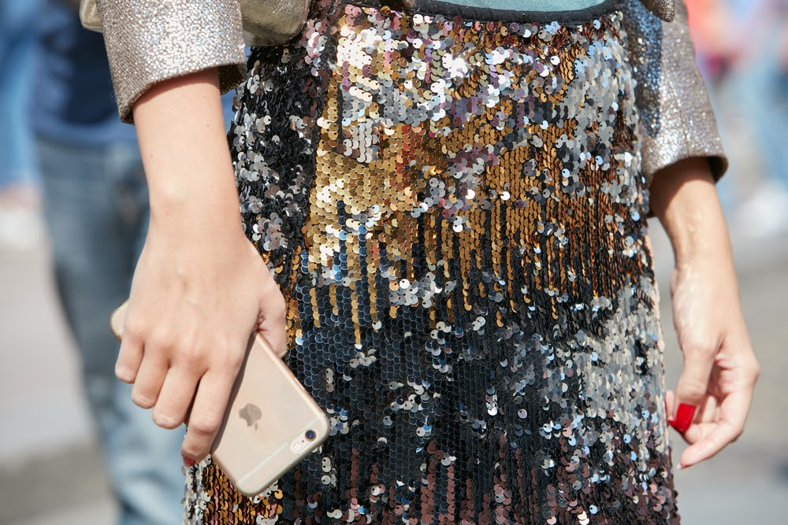
Glamourul anilor ‘60 se numără printre tendințele în modă în 2021, acesta aducând un twist modern hainelor la modă în acest sezon. Astfel moda în toamna anului 2021 este completată de variații monocrome, ce sunt în același timp sexy și un simbol al bunului gust.
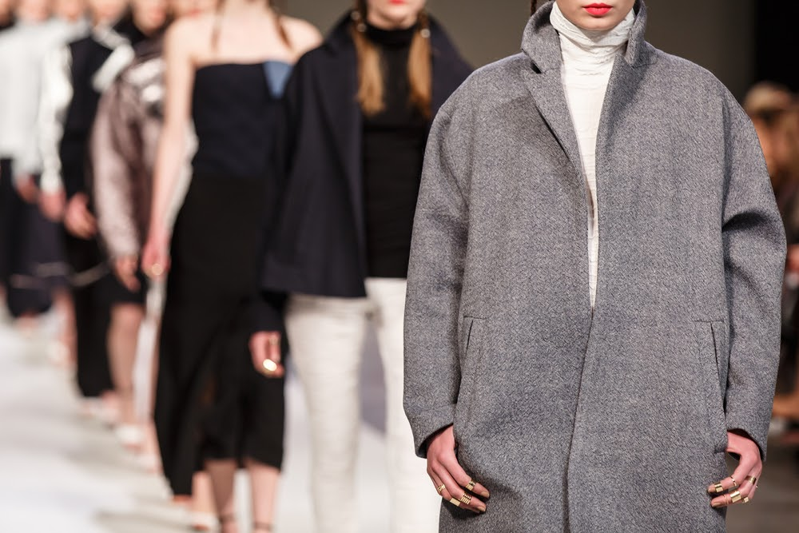
Printre obsesiile acestui sezon se numără și tricotajele. Astfel, moda toamnă-iarnă 2021-2022 favorizează o siluetă confortabilă și sexy. Chiar și rochiile din tricot vin în cele mai diverse forme și dimensiuni, dezvăluind pielea pe alocuri sau având modele transparente pentru un efect mai îndrăzneț.
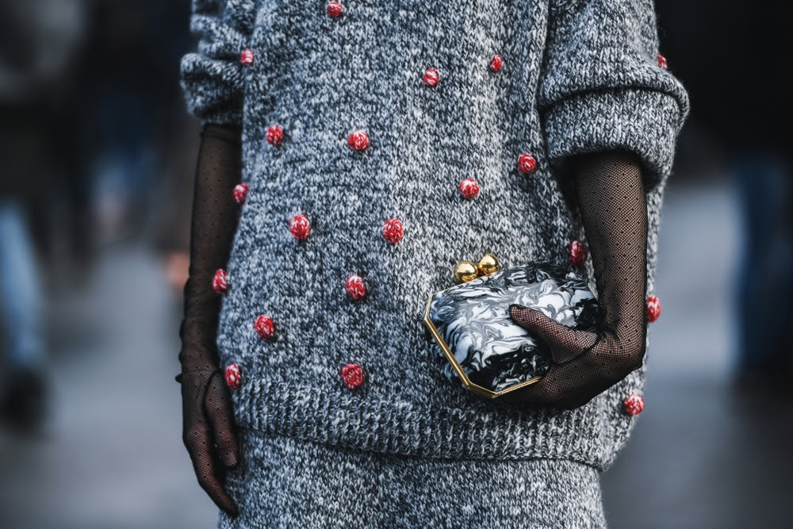
Variațiile pe această temă cu siguranță nu se vor epuiza niciodată, iar în acest sezon pielea are o inspirație burgheză a anilor ‘70 în casa de modă Hermès, o inspirație all-over în show-urile de pe catwalk ale Schiaparelli și un touch rock în cazul designerului Simone Rocha.
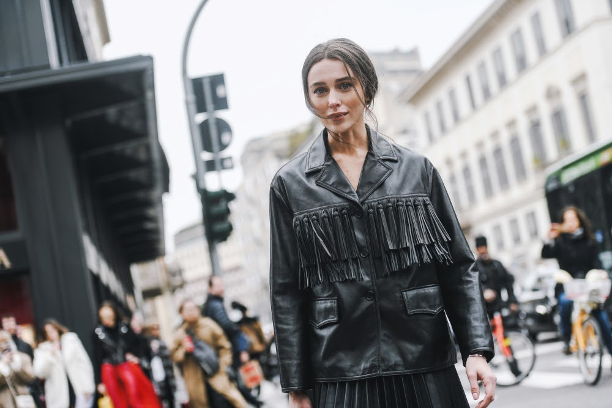
Cosmonaut, extraterestru sau astronom? Moda prezentului ar răspunde: câte puțin din toate! Putem spune cu siguranță că tendințele în modă din 2021-2022 visează la un viitor îndepărtat, cu inspirații variind de la science fiction la NASA.
Există un aer festiv în colecțiile acestui sezon, motiv pentru care laitmotivul tendințelor din modă în 2021-2022 sunt visele și poveștile cu zâne. Astfel, rochiile de seară în nuanțe de argintiu ies din garderobă pline de încredere și caracter.
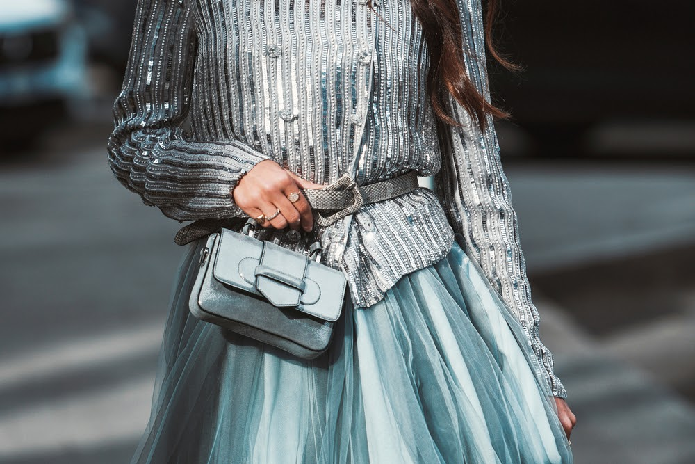
Una dintre tendințele atât de apreciate în acest sezon în lumea modei sunt patch-urile și formele geometrice. Așa că nu-i de mirare că tendințele în modă pentru 2021-2022 își manifestă înclinarea spre piese vestimentare în stil geometric, amestec și potrivire, juxtapunere și coasere a peticelor din diferite țesături și tipuri de piele.
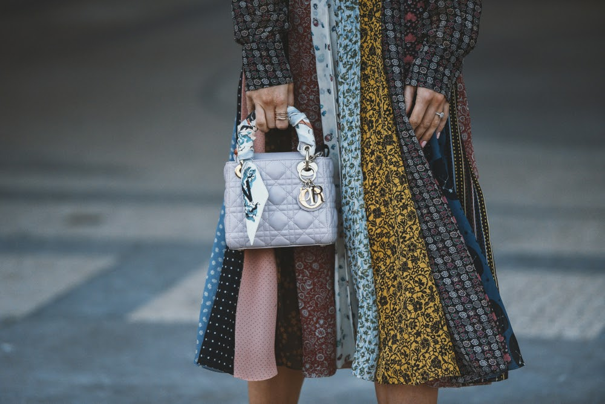
În anotimpul rece, gecile și jachetele matlasate au devenit vedetele sezonului de toamnă-iarnă 2021-2022. Gecile de tip puffer matlasate au avantajul de a fi interpretate atât în stil sport, cât și elegant, inspirate de silueta de tip clepsidră. Acestea sunt croite în formă supradimensionată, fiind unele dintre piesele-vedetă ale oricărei ținute abordate în sezonul de iarnă ce urmează.
Femeile ce manifestă o pasiune aparte pentru arta layeringului vor fi încântate să descopere că puloverul tip vestă este unul dintre elementele surpriză ale acestui sezon. Reapărut la defilările de modă din toamna anului 2020, puloverul tip vestă a fost prezent din nou și în acest an în majoritatea colecțiilor prezentate de case de modă renumite.
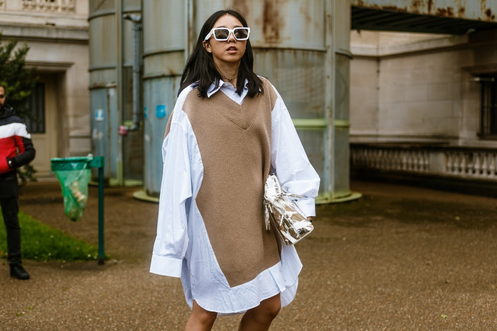
Printre culorile anului 2021 în materie de haine se numără nuanțele pastelate de lavandă și cele deschise de violet, ca o reminiscență a culorii anului 2018, ultravioletul. Lavanda este o pată de culoare optimistă ce a inspirat colecțiile din acest an la Săptămâna Modei, motiv pentru care toate fashionistele optează pentru piese vestimentare lila în acest sezon.
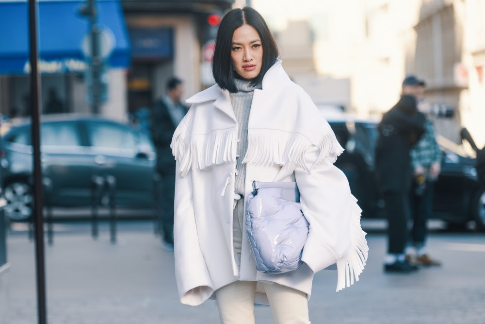
Tonurile neutre de bej, gri, caramel, crem și pană spre maro închis fac deliciul tendințelor în modă în 2021-2022. Branduri de lux faimoase optează pentru tricotaje în culori neutre, abordate în piese vestimentare precum eșarfe groase, fuste tricotate, rochii până la gleznă, compleuri din fuste și bluze, fuste și bustiere sau franjuri tricotați. Casele de modă sugerează că tricotajele în tonuri neutre sunt preferate în materie de confort și eleganță în acest sezon.
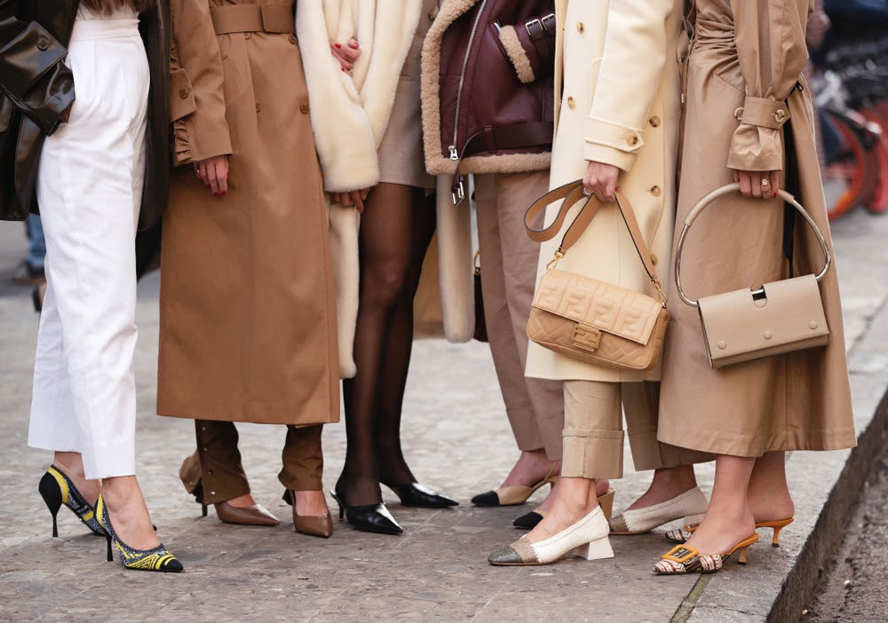
După ani întregi de pasteluri, moda revine la culorile saturate, mult mai bogate vizual și mai intense decât cele din anii anteriori. Această „terapie prin culoare” este considerată de către casele de modă drept un răspuns direct pentru starea de depresie cauzată la nivel global de către pandemie. Chiar dacă în sezonul rece nuanțele nu se duc spre neon, așa cum se întâmplă în cazul tendințelor de vară, noile colecții ale brandurilor de lux oscilează între prespălat și saturat.
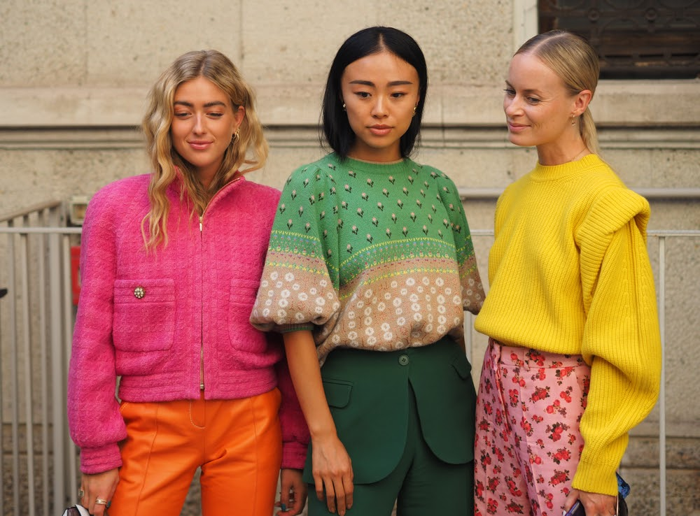
Știm că uneori poate deveni de-a dreptul epuizant să încerci să ții pasul cu trendurile prezentului, însă ne-am gândit să-ți venim în ajutor cu câteva sugestii în materie de vestimentație, pentru a ne asigura că respecți tendințele în modă pentru 2021-2022. De la piese vestimentare casual și office, la piese cu imprimeuri eclectice, franjuri jucăuși, mâneci bufante și piese roz aprins, acest nou sezon le are pe toate, în așa fel încât să le poată mulțumi chiar și pe cele mai pretențioase dintre fashioniste.
Dacă vrei să-ți reînnoiești garderoba de sezon, ține cont de cele mai noi tendințe în modă din 2021 și mergi pregătită la următoarea sesiune de shopping. Descoperă în cele ce urmează cum poți incorpora piesele vestimentare fashion în garderoba ta de toamnă-iarnă!
Blugii sunt cu siguranță piese vestimentare pentru care răspunsul este întotdeauna „da!”. Indiferent de vârstă și de tipul siluetei, de activitatea întreprinsă și de vremea de afară, toate femeile roiesc în jurul jeanșilor. Te întrebi ce blugi se poartă în 2021-2022? Trebuie să știi că blugii actuali sunt cei cu talie înaltă și că blugii skinny nu mai reprezintă una dintre piesele vestimentare în trend. Analizând tendințele în modă pentru 2021-2022, îți sugerăm să te orientezi spre alegerea unor blugi drepți, blugi asimetrici, mom fit, boyfriend, boot cut, largi și evazați, cu capse, nasturi, imprimeuri sau rosături.
Cum poți incorpora aceste piese irezistibile în outfiturile tale de sezon? Răspunsul este: foarte simplu! Alege să asortezi jeanșii cu pulovere în nuanțe neutre în outfituri casual, alături de topuri extravagante și pantofi cu toc pentru ținute casual chic, alături de sacouri elegante și palton în ținute casual elegant. Iată câteva surse de inspirație!
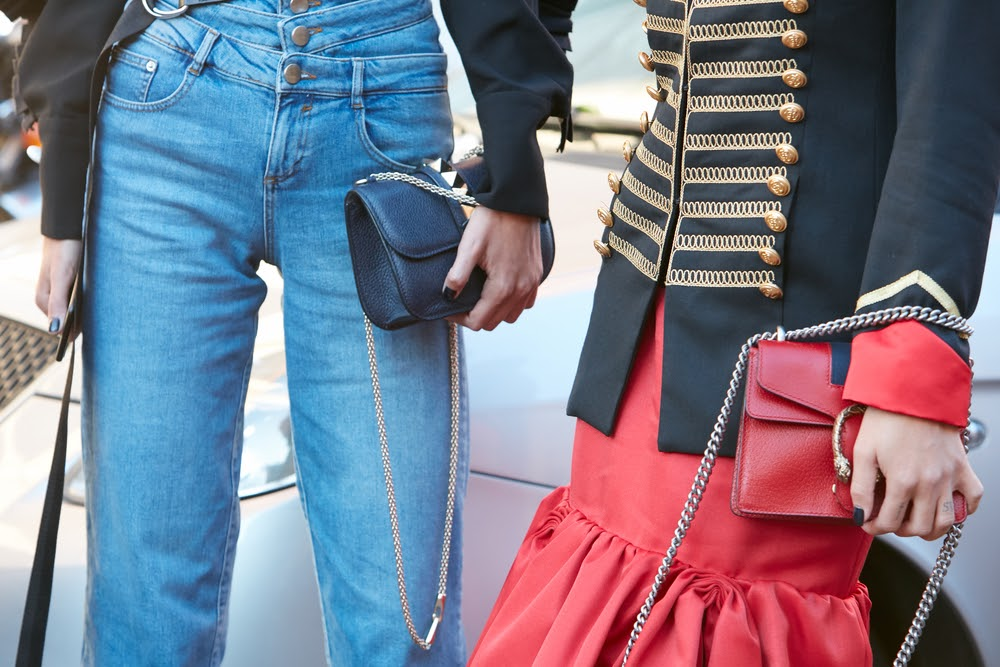
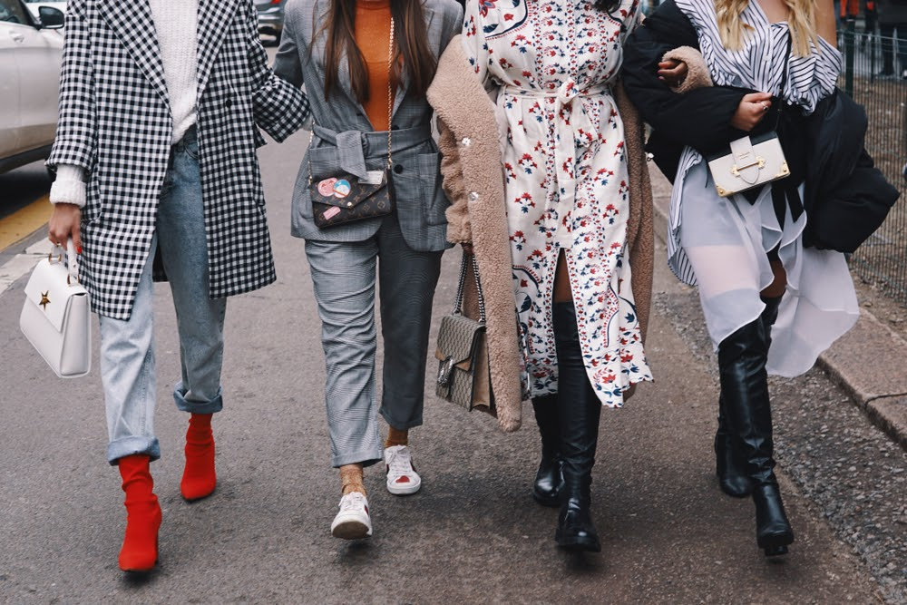
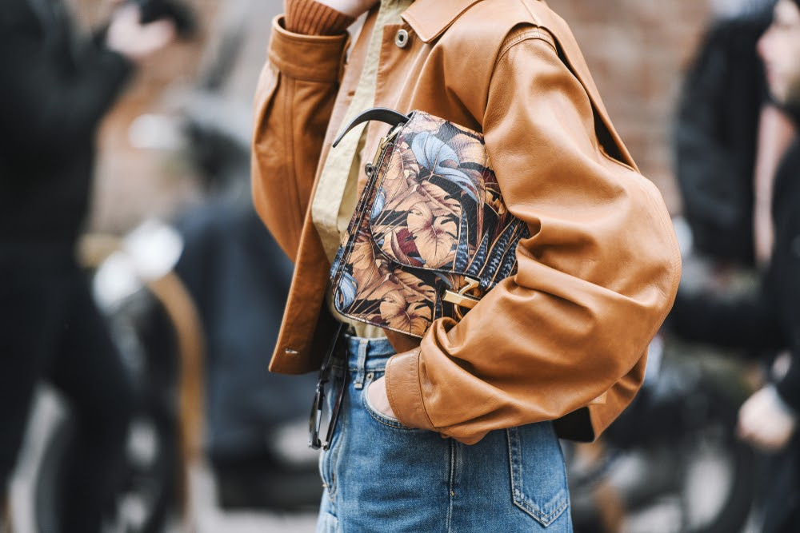
Ok, să lăsăm puțin clasicul denim deoparte, căci cu siguranță te întrebi și ce pantaloni se poartă în 2021. La fel ca și în cazul jeanșilor, pantalonii largi și cei evazați se numără printre tendințele în modă în 2021-2022. Stofele ușoare din care sunt realizate aceste perechi de pantaloni permit integrarea acestora în numeroase ținute, de la cele de zi la cele romantice și luxoase de seară. Pantalonii originali culottes, ce se aseamănă izbitor cu fustele, se numără și ei printre piesele la modă din acest sezon. La fel și modelele de pantaloni în carouri!
Fie că dorești să creezi ținute office, în care să-i asortezi cu cămașă și sacou, fie că dorești ținute casual chic, prin alăturarea unui pulover în nuanțe saturate sau că vrei să ai o apariție îndrăzneață, asortându-i cu botine de damă și topuri scurte din materiale sclipitoare, astfel de pantaloni pot fi extrem de ușor de integrat în ținutele tale, indiferent de stil.
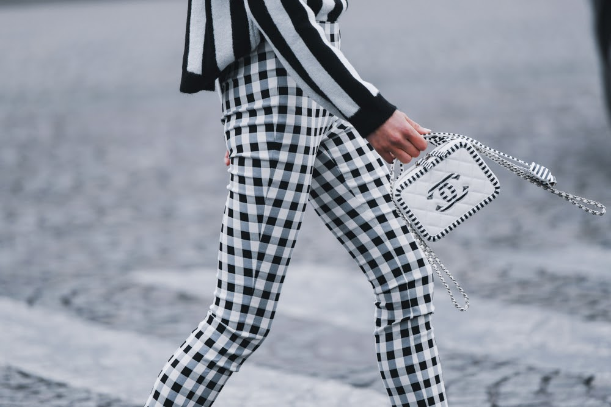
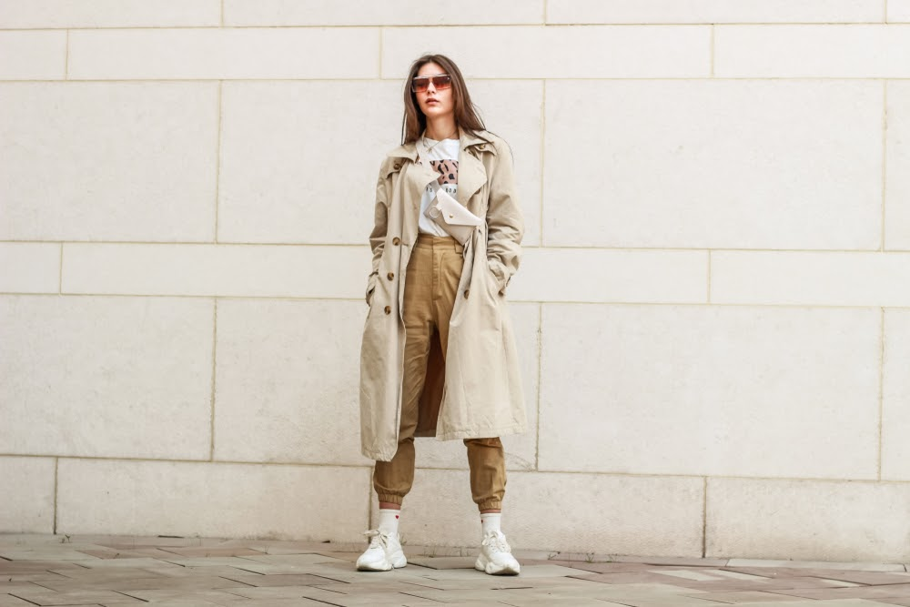
Rochiile strălucitoare și pline de glamour se numără printre cele mai frumoase tendințe în modă pentru 2021-2022. Astfel, dacă te întrebai ce rochii se poartă în 2021, află că nu poți da niciodată greș dacă mizezi pe rochii cu pene, paiete și detalii elegante din pietre. Și cum argintiul se numără printre tendințele sezonului, poți depăși acea extra mile și poți alege să porți rochii lungi, de culoarea argintului. Și nu ezita să aduci o doză de sclipire și prin perechi elegante de încălțăminte de damă, care să completeze într-un stil rafinat întreaga ținută. Ți-am pregătit și câteva surse de inspirație!
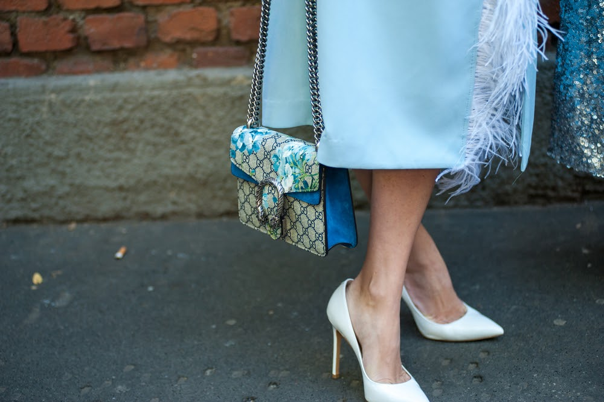
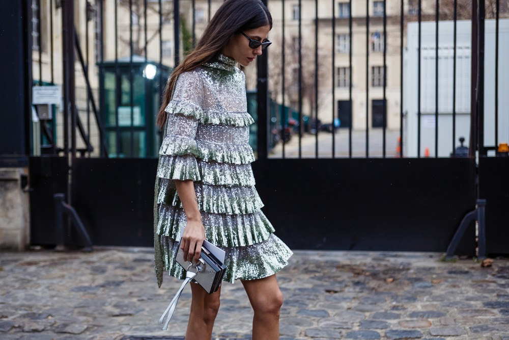
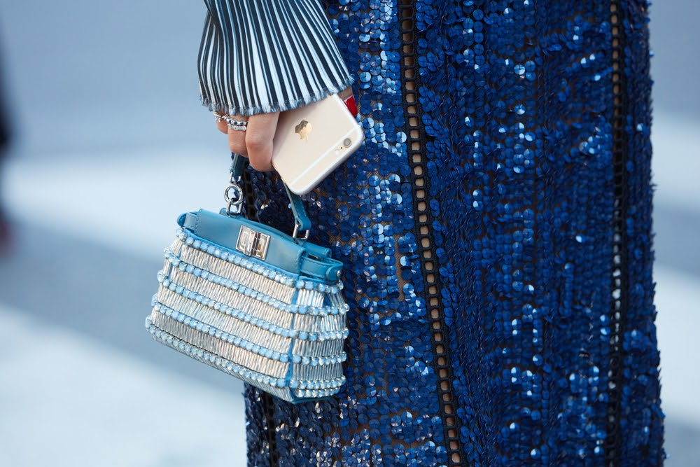
Am menționat anterior că pliurile sunt printre vedetele trendurilor din acest nou sezon, motiv pentru care sugestia noastră este să mizezi pe fuste plisate cât cuprinde! Fie că optezi pentru materiale fluide sau stofă, culori pastelate sau culori saturate, fustele în pliuri sunt ideale pentru crearea unor ținute chic, de sezon. Asorteză-le cu cămăși, pulovere, sacouri și paltoane, folosindu-te de arta layering-ului. Dacă optezi pentru fuste plisate din piele, acestea se vor potrivi de minune și cu geci puffer sau cu blănuri artificiale.
Cât despre încălțăminte, fustele plisate sunt atât de versatile încât pot fi asortate în combinații vestimentare cu cele mai diverse perechi de încălțări, de la pantofi cu toc sau pantofi Oxford de damă, până la botine și cizme de damă lungi.
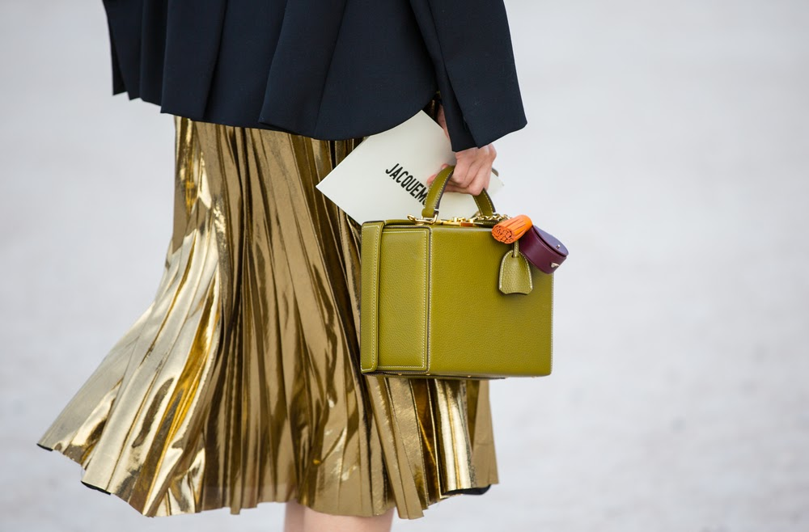
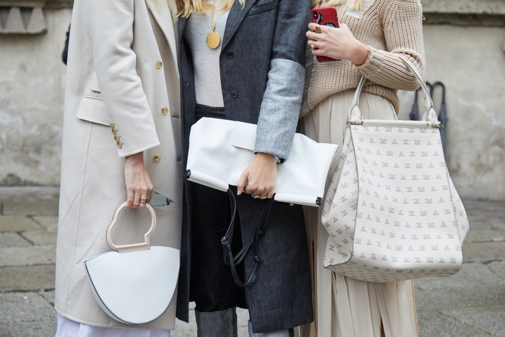

Tricotajele se numără printre cele mai populare și mai apreciate tendințe din acest sezon, datorită stilul chic și confortabil pe care piesele vestimentare îl emană prin fiecare fibră. Rochii, fuste, compleuri din bluze și pantaloni, veste, compleuri din fuste și topuri, toate aceste piese vestimentare din tricot trebuie să se regăsească în garderoba ta de toamnă-iarnă. Un outfit pentru fete în 2021 este imposibil să nu conțină cel puțin o piesă vestimentară din tricot, indiferent de stilul abordat.
Mizează pe tricotaje în culori neutre, căci această paletă vizuală este la loc de cinste în tendințele în modă pentru 2021-2022. Pentru un look de efect, poartă-le cu cizme lungi din piele și eșarfe groase din tricot. Iată câteva idei!
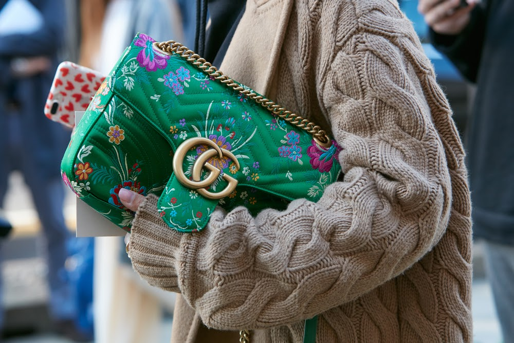
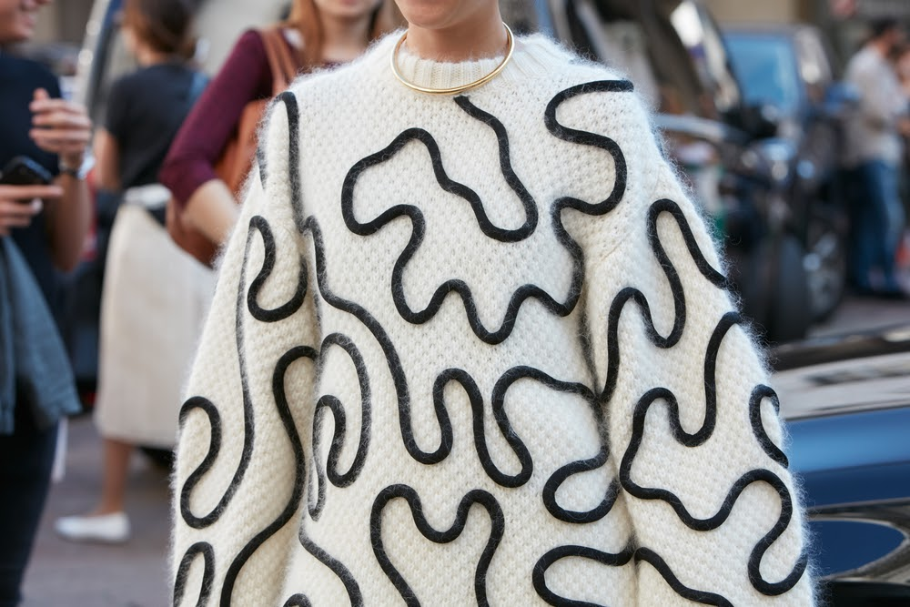
Ce genți se poartă în 2021-2022? Casele de modă aduc în atenția fashionistelor cele mai cool modele de poșete și genți. De la clasicele genți tote bag, la gențile pufoase, de la gențile din piele cu lanțuri la cele multi-tasking, de la plicurile cu detalii sclipitoare la gențile minuscule ale faimosului brand Jacquemus, toate acestea se numără printre tendințele în modă pentru acest sezon.
Indiferent de stilul vestimentar, este imposibil să nu găsești un model fashion de geantă pe care să îl asortezi outfiturilor tale. Te pregătești pentru o zi la birou? Nimic din ce un tote bag nu poate rezolva! Ești adepta tricotajelor și ținutelor confortabile? Optează pentru o geantă ceva mai pufoasă decât un animal de companie! Te pregătești pentru o petrecere? Un plic sclipitor se poate transforma în piesa de rezistență a ținutei. Cochetezi cu stilul soft rock? O geantă cu lanțuri metalice poate fi accesoriul ideal. Stilul casual te definește? Geanta bej, un articol clasic și atemporal poate aduce un plus de farmec outfitului tău relaxat.
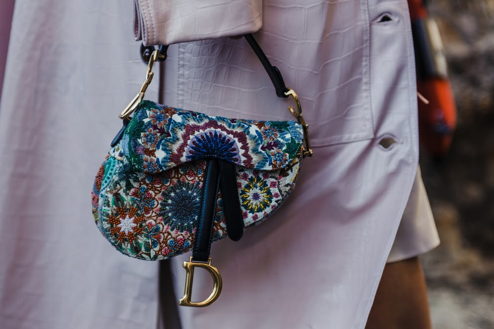
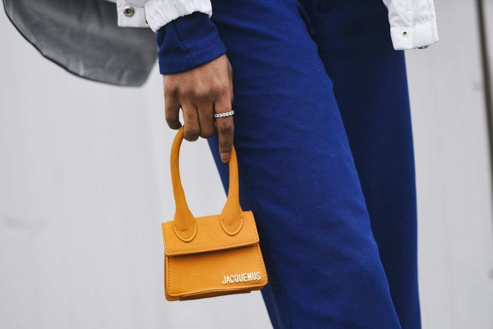
Am prezentat într-un articol anterior ce pantofi se poartă în 2021, însă cum sezonul rece este gata să ne învăluie, trebuie să-l întâmpinăm cum se cuvine și în materie de încălțăminte, așa că ne vom lua la revedere pentru ceva vreme de la pantofii cu toc kitten, șlapi sau saboți și ne vom îndrepta atenția spre tendințele sezonului. Cizmele înalte până la genunchi, cizmele cu textură de piele de crocodil și tocuri asimetrice, cizmele negre din piele întoarsă, mocasinii, pantofii loafers cu toc, platformele din piele și papucii pufoși de casă se numără printre cele mai populare tendințe din sezonul rece.
Cizmele clasice și cizmele de cauciuc verzi fac și ele furori în rândul fashionistelor de pe Instagram, la fel cum o fac și sneakerșii roșii de damă. Iată câteva exemple de încălțări la modă în acest sezon, pe care să le asortezi celor mai variate ținute, alcătuite din piese vestimentare la modă!
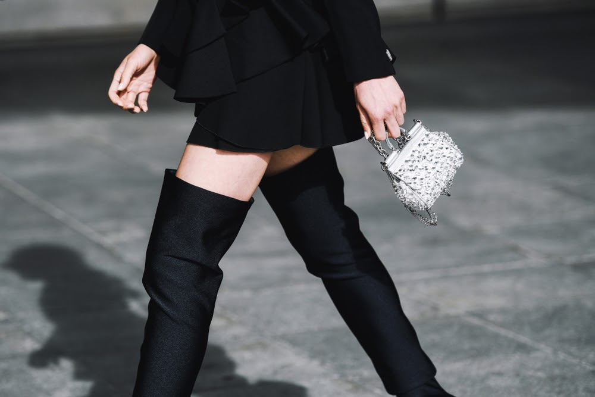
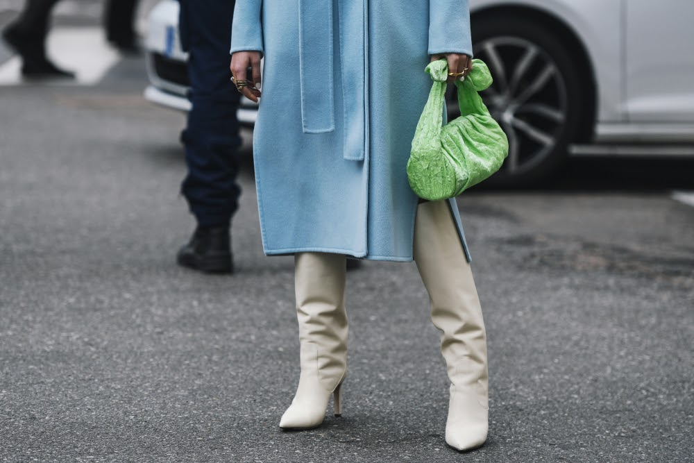
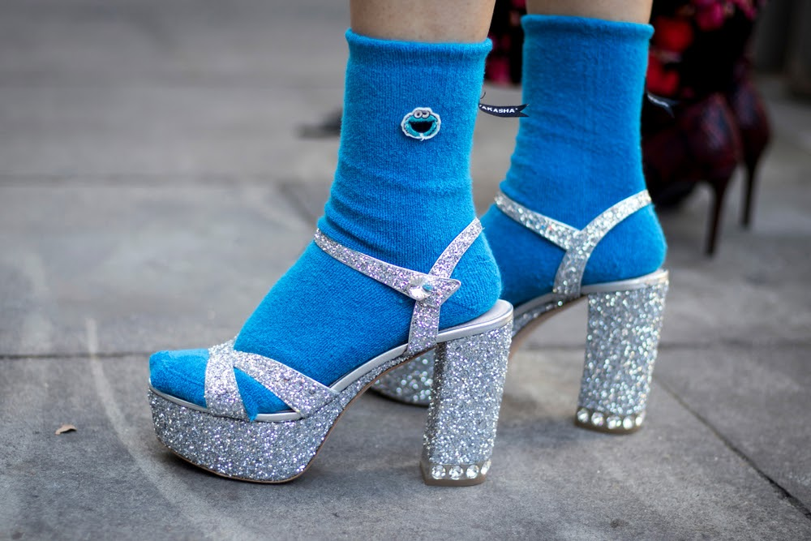
Asemenea hainelor la modă, și accesoriile vor varia într-o egală măsură. Printre cele mai populare accesorii din acest sezon se numără așa-numitele caschete croșetate, gențile tote, pantofii cu platforme uriașe, eșarfele pentru păr retro, gențile hobo, cizmele până la genunchi, Moon Boots, ochelarii tip ski și mănușile din materiale călduroase cu motive îndrăznețe. Inspiră-te în asortarea acestora din imaginile următoare!
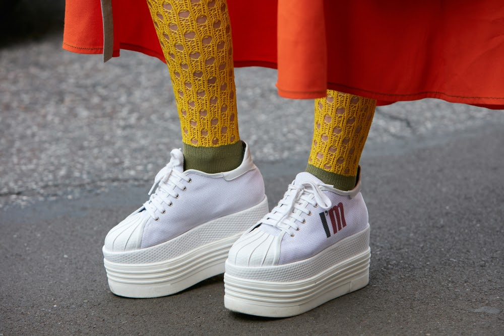
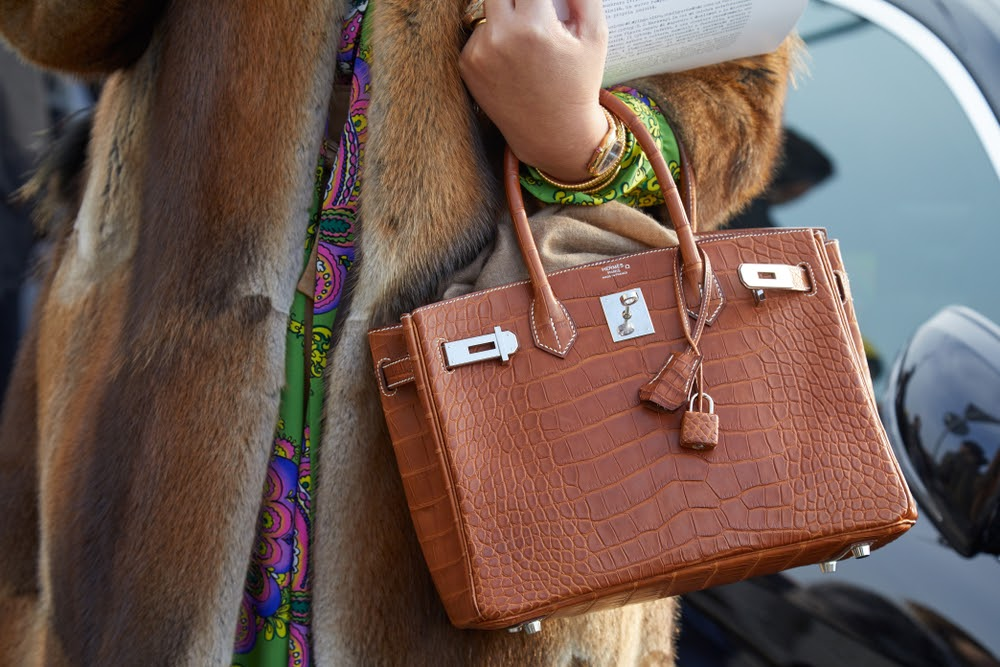
Acum că ai aflat ce se poartă în acest sezon, pune-ți imaginația la încercare și adopta piese vestimentare fashion pentru apariții de excepție. Tendințele în modă pentru 2021-2022 sunt atât de variate, de îndrăznețe și de permisive, încât îți va fi atât de simplu să fii în trend în timp ce-ți accentuezi personalitatea. Effortless chic, cum ar spune americanii!